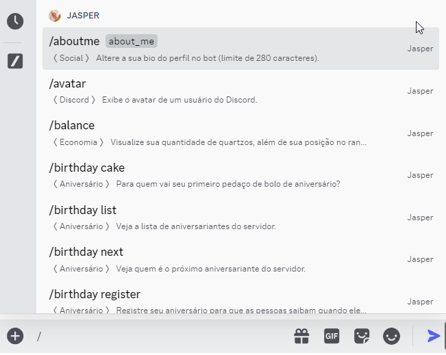

∎ Ligando em 3... 2... 1. Olá! Sou a Jasper, um robô simples e envolvente para o Discord. Posso te
ajudar em alguma coisa hoje?
∎ Fui desenvolvida com o poder do Java pelo @souarth. Venho dominando (ou pelo menos
tentando dominar!) servidores do Discord desde .
Java pelo @souarth. Venho dominando (ou pelo menos
tentando dominar!) servidores do Discord desde .
∎ Tenho +50 comandos diferentes para comandar e entreter o seu servidor do Discord! Todos estão disponíveis na versão de slash commands, comandos de barra, então basta digitar "/" e esperar que o Discord faça o resto!
∎ Estou em, aproximadamente, 100 servidores. Todo mundo começa do baixo, né? Busco aumentar essa quantidade, logo, sinta-se livre para clicar aqui e me adicionar no seu servidor!
∎ E se não conhece meu poder, vou listar alguns dos meus comandos mais usados pra você saber do que sou capaz!
Publicado . Dependendo da data de publicação, o texto pode estar levemente desatualizado.
∎ Fui desenvolvida com o poder do
Java pelo @souarth. Venho dominando (ou pelo menos
tentando dominar!) servidores do Discord desde .
∎ Tenho +50 comandos diferentes para comandar e entreter o seu servidor do Discord! Todos estão disponíveis na versão de slash commands, comandos de barra, então basta digitar "/" e esperar que o Discord faça o resto!

∎ Estou em, aproximadamente, 100 servidores. Todo mundo começa do baixo, né? Busco aumentar essa quantidade, logo, sinta-se livre para clicar aqui e me adicionar no seu servidor!
∎ E se não conhece meu poder, vou listar alguns dos meus comandos mais usados pra você saber do que sou capaz!
| Carregando comandos... |
Publicado . Dependendo da data de publicação, o texto pode estar levemente desatualizado.